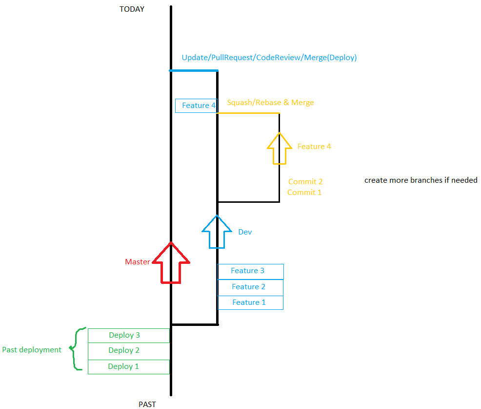

Some Title: Part 1
Git Rules and Tips
- Git is powerful and we are using git to manage our code
- Master is automatically deployed to our web server
- Dev is our final working branch(combine everyone’s code before merging into MASTER
- New feature branches should be used for new features
- More sub branches can be used if needed
- Write commit messages that make sense and helpful
- Fetch all and pull from the branch before push
- NEVER FORCE PUSH (unless you know what you are doing still not recommended)
- Merge all sub branches into one feature branch when ready
- Merge target branch(Dev, Master, etc)back into your branch and resolve conflicts in your own branch before merging
- Rebase/squash is recommended before merging feature branch into DEV
- Always update your branches to the newest before merging(fetch all and pull both target branch and your branch)
- Pull request is enforced for merging into Master, 2 people must review and approve the code carefully
- If you see anything wrong during the code review please tell the person/group or leave a comment on the review about the issue
- Fully test your feature before merging
- Delete branches that are merged on remote(you can still keep it on your local)
